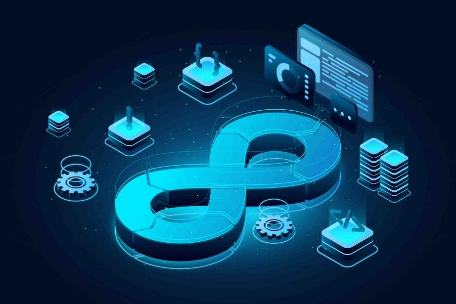
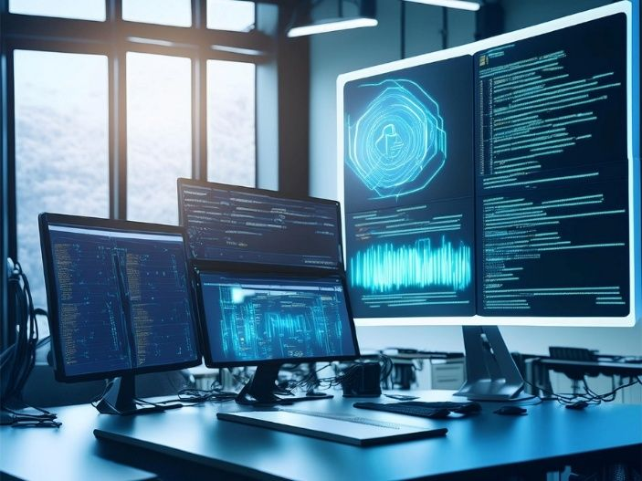

Modern Infrastructure. Automated Operations. Secure Technology.
At WinG Group, we provide technology consulting, engineering and project services designed to help organizations build, modernize, secure and operate reliable digital infrastructure.


Project-Based Delivery
Dedicated IT Experts
Managed IT Services
Consulting & Technical Assessment
Your International IT Engineering Team
WinG is supported by an international team of experienced IT and technology professionals with expertise across Cloud, DevOps, Kubernetes, Infrastructure, Cybersecurity, Automation and IT Operations.
WinG combines technical expertise, international IT talent and project-oriented execution to help organizations solve complex technology challenges.
You define the challenge.
We bring the expertise.
Together, we build the solution.